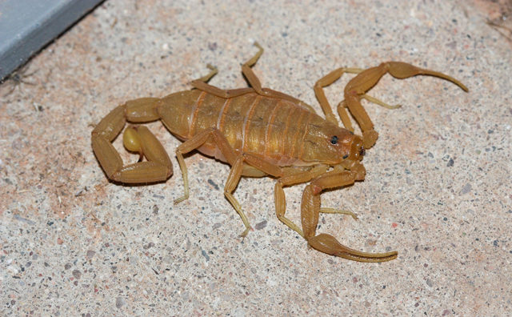
Arachnid
Arizona Bark Scorpion
This pale scorpion usually stays hidden during the day and emerges at night to hunt small animals such as insects.
Explore the animals that survive and thrive in the Sonoran Desert after dark.
Select any animal card to learn more.

This pale scorpion usually stays hidden during the day and emerges at night to hunt small animals such as insects.

One of the smallest owls, the elf owl hunts insects and other small prey after sunset.

This small relative of the raccoon is mostly active at night and uses its climbing skills to move through rugged terrain.
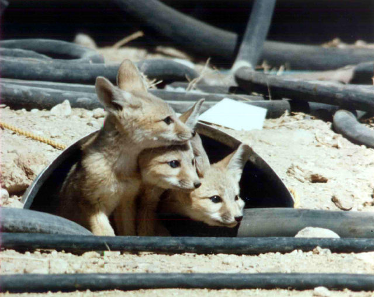
A small desert fox that searches for rodents and other prey after dark.
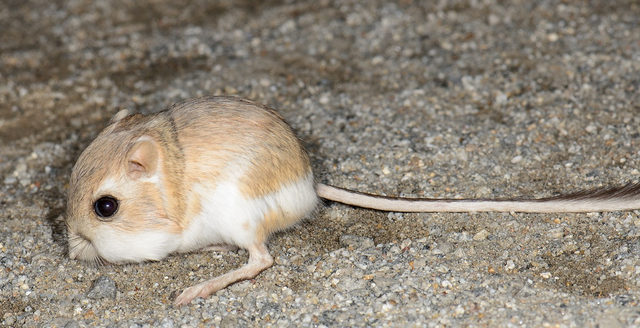
A nocturnal rodent that gathers seeds and carries them back to its burrow.
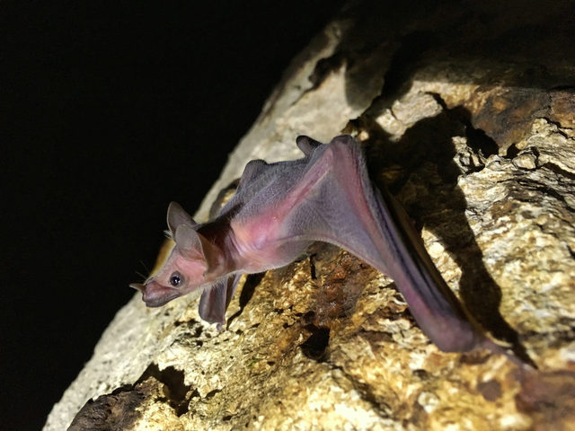
A night-flying bat that visits cactus and agave flowers to feed on nectar and pollen.
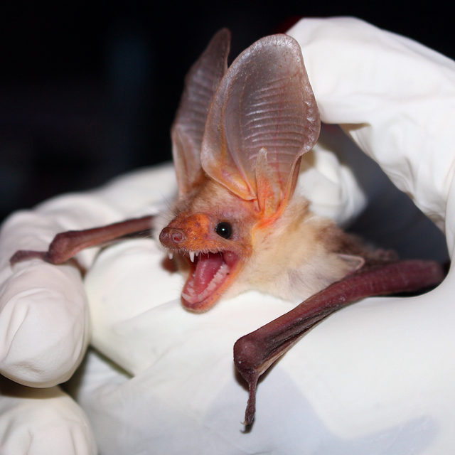
An insect-eating bat that often searches for prey on the ground.
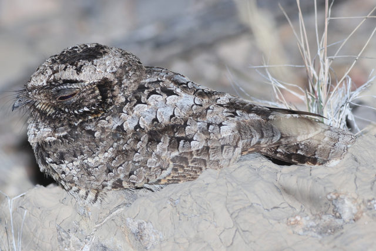
A small nightjar that catches insects after dusk and is often heard calling at night.
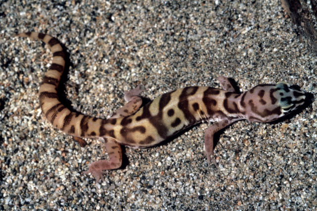
A small, night-active lizard that searches for insects across the desert floor.
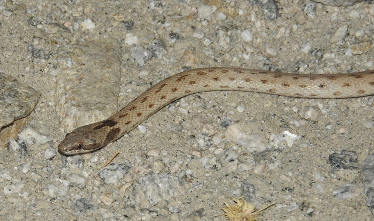
A secretive snake that hunts lizards and other small animals after dark.
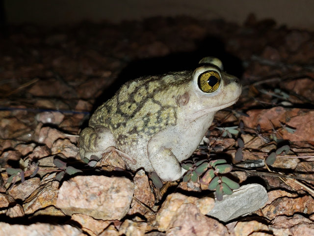
A desert amphibian that can emerge after summer rain to feed and breed.
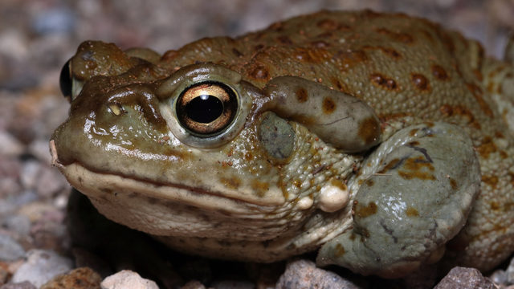
A large toad that becomes especially active on warm, rainy nights.
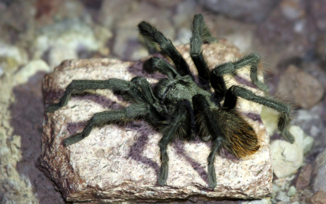
A large ground-dwelling spider that feeds on insects and other small prey.
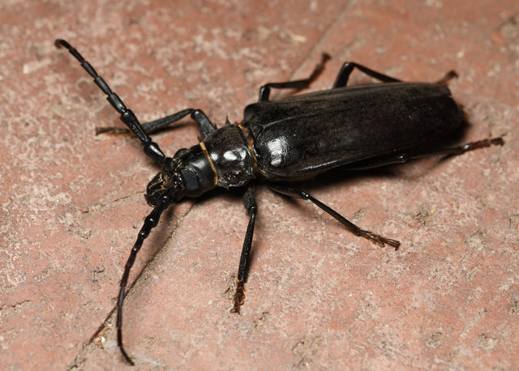
A large longhorn beetle whose adults are often seen on warm summer evenings.

A small moth associated with yucca flowers; the adults are commonly active after dark.